1922 — 1993
РакитянскийИван Александрович
Рассказ о генерал-майоре, его подвигах, вкладе в Победу и послевоенной жизни.
Открыть историюИстории о героях, основанные на исследованиях и рассказанные внуками и правнуками.
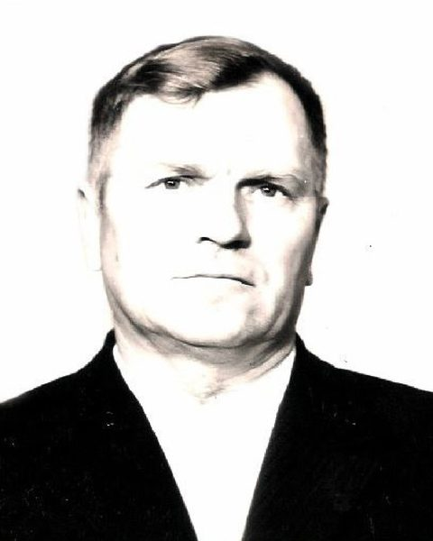
Машкин Сергей НиколаевичО своём прадеде рассказывает Александр Машкин, 2 «В» класс Максюта Дмитрий НестеровичО своём прадеде рассказывает Семён Носков, 2 «В» класс
Максюта Дмитрий НестеровичО своём прадеде рассказывает Семён Носков, 2 «В» класс
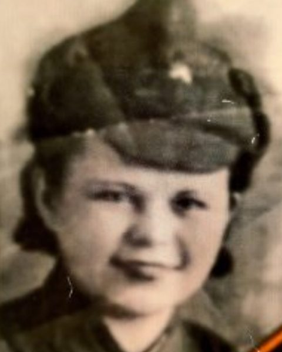
Громова Серафима ВасильевнаО своей прабабушке рассказывает Вера Бирюкова, 6 «В» класс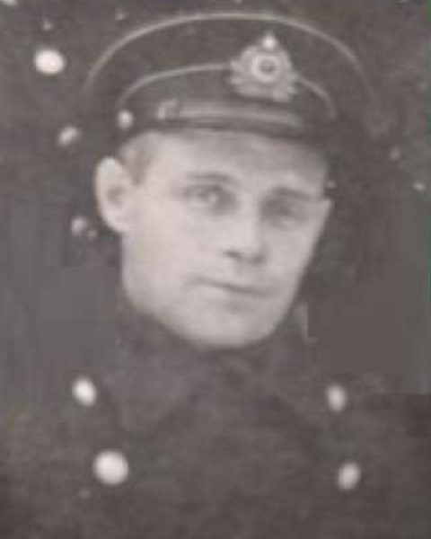
Лазеба Михаил МакаровичО своём прадеде рассказывает Василиса Аборенко, 6 «В» класс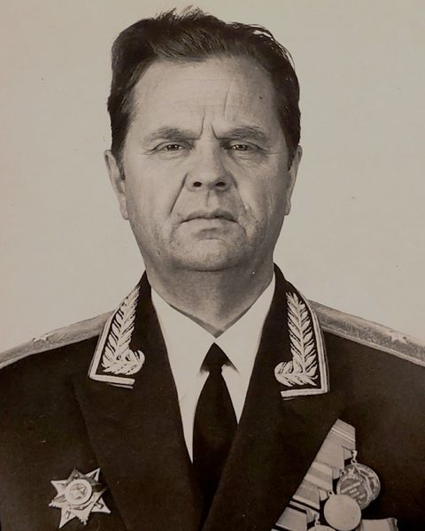
Ракитянский Иван АлександровичО своём прадеде рассказывает Михаил Жирохов, 5 «Г» класс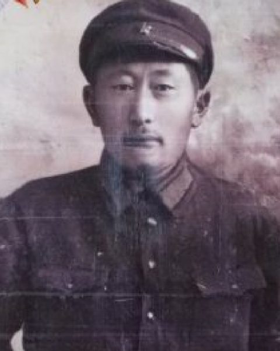
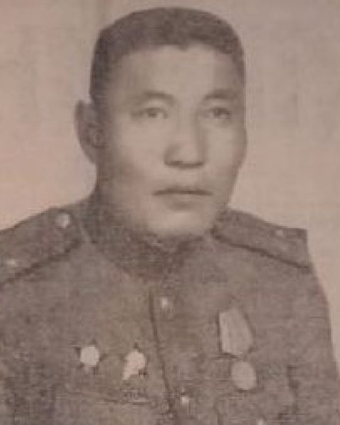
 Ринчинов Жамсо, Дондоков Дугаржаб Дондокович, Цыденов Арсалан ЦыденовичО своих прадедушках рассказывает Дари Жамсоева, 10 «Б» класс
Ринчинов Жамсо, Дондоков Дугаржаб Дондокович, Цыденов Арсалан ЦыденовичО своих прадедушках рассказывает Дари Жамсоева, 10 «Б» класс
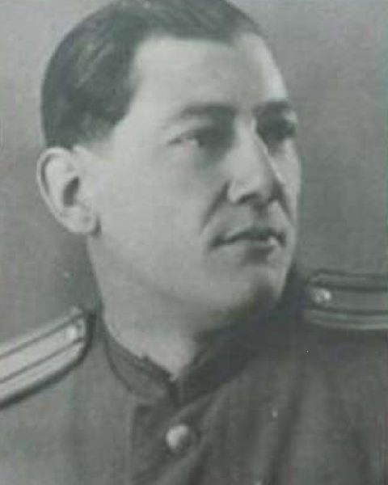
Войцеховский Николай КалистратовичО своём прадедушке рассказывает Арсений Войцеховский, 4 «Б» класс Стадник Алексей ДмитриевичО своём прадеде рассказывает Анастасия Доморощенкова, 5 «Б» класс
Стадник Алексей ДмитриевичО своём прадеде рассказывает Анастасия Доморощенкова, 5 «Б» класс
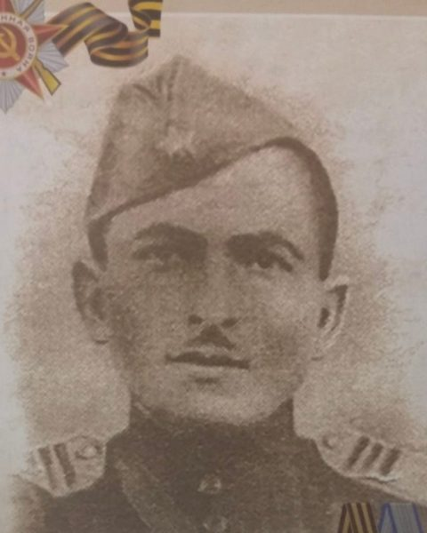
Меликян Мовсес ВагановичО своём прадеде рассказывают Роман Нерсисян, 3 «Г» класс, и Нелли Нерсисян, 1 «В» класс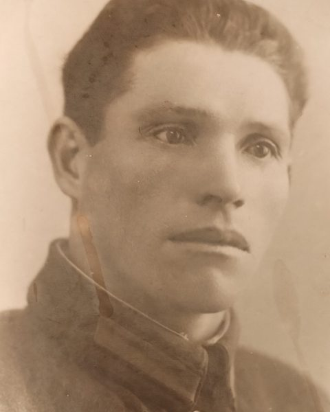
Митюков Данил ПетровичО своём прадедушке рассказывает Арсений Мельник, 2 «А» класс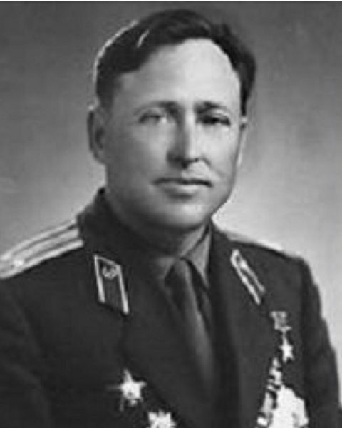
Чарков Тимофей НикитовичО своём прапрадедушке рассказывает Софья Савина, 5 «Б» класс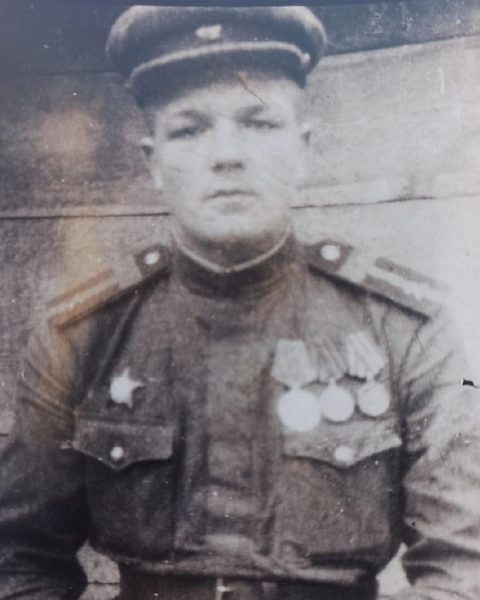
Иванов Иван ГригорьевичО своём прадеде рассказывает Ярослав Егоров, 3 «Г» класс Ивченков Николай ЛукьяновичО своём прадеде рассказывает Владислав Дохневский, 11 «А» класс Чистякова Мария ИвановнаО своей прабабушке рассказывает Алина Курашева, 8 «А» класс
Чистякова Мария ИвановнаО своей прабабушке рассказывает Алина Курашева, 8 «А» класс
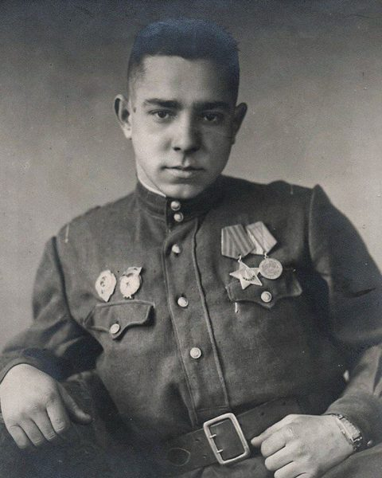
Игнатьев Михаил НиколаевичО своём прапрадедушке рассказывает Анастасия Игнатьева, 3 «Г» класс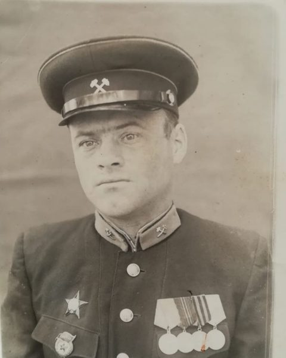
 Михеев Павел Иванович и Михеева Надежда МихайловнаО своих родных рассказывает Софья Куркина, 8 «А» класс
Михеев Павел Иванович и Михеева Надежда МихайловнаО своих родных рассказывает Софья Куркина, 8 «А» класс
Читайте рассказы о жизни людей, повлиявших на нашу историю. Каждая история уникальна.
1922 — 1993
Рассказ о генерал-майоре, его подвигах, вкладе в Победу и послевоенной жизни.
Открыть историю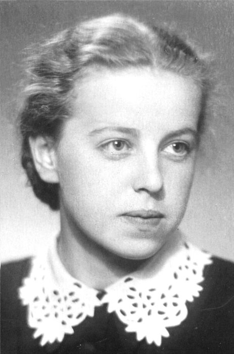
1917 — 1978
История начальника штаба объединённых партизанских войск, рассказанная его правнуком.
Открыть историю